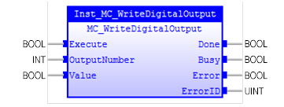

MC_WriteDigitalOutput
Writes a Boolean value to an output.

Description:
The FB writes the value (input ‘Value) of the selected output
(input ‘OutputNumber’) at the rising edge of ‘Execute’ input.
FB will generate an error when invalid inputs are provided.
This Function Block does not affect the PLCopen state
machine.
Make sure the input and output parameters are of data type
indicated in the table below.
The ‘OutputNumber’ range is based on hardware configuration.
Inputs/Outputs:
|
Name
|
Data Type
|
Description
|
|
INPUTS
|
|
Execute
|
BOOL
|
Write ‘Value’ to output
|
|
OutputNumber
|
INT
|
Selects the output.
|
|
Value
|
BOOL
|
The value to be written to output.
|
|
OUTPUTS
|
|
Done
|
BOOL
|
Writing
process is done.
|
|
Busy
|
BOOL
|
The
FB is not finished and a new output value is to be expected.
|
|
Error
|
BOOL
|
Signals
that an error has occurred within the FB.
|
|
ErrorID
|
UINT
|
Error
identification
|
Examples:
Example 1:
|
 Example
Example
|
|
(*Example for
MC_WriteDigitalOutput*)
OutNum :=
INT#8
;
inst_WriteDigitalOutput ( Execute:=bExecute,
OutputNumber:=
OutNum,
Value:=bValue
);
bBusy := inst_WriteDigitalOutput.Busy;
bDone := inst_WriteDigitalOutput.Done;
bError := inst_WriteDigitalOutput.Error;
ErrorId := inst_WriteDigitalOutput.ErrorID;
|
See also: